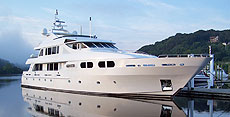

CLA Services
Marine/Dock Engineering

CLA provides a full range of marine engineering services for a variety of private and municipal clients in Connecticut. Our experience is in all aspects of recreational and commercial marine design, including construction. We have broad experience in addressing regulatory requirements including local municipalities, CT DEP, US Army Corp of Engineers, US Coast Guard, and Harbor Management Commissions.
- Feasibility Studies
- Commercial, Industrial, and Residential Development
- Commercial Marina Design
- Residential Dock Design
- Marina Perimeter Permits
- Bulk Heads
- Structural Evaluations
- Boat Ramp Design
- Coastal Area Management Reports (CAM)
- Bathymetric Surveys
- Erosion Control
- Tidal Wetlands Delineation
- Permitting (Local, State, & Federal)